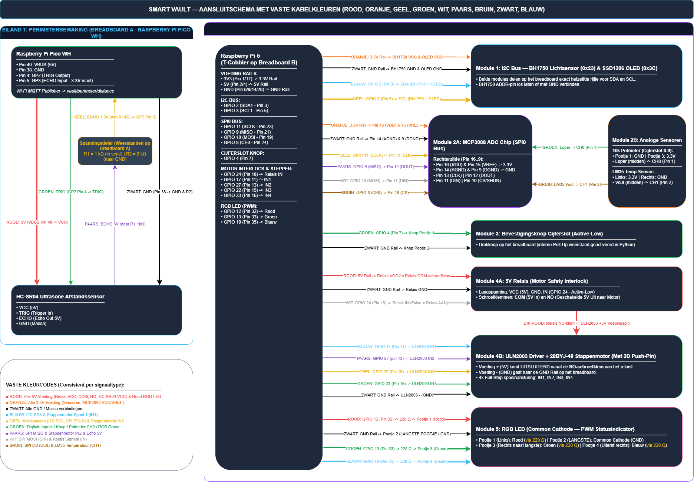

Hardware and connections
Pin map from the current code
GPIO numbers use BCM numbering, not physical header positions. The OLED and MCP3008 share SPI clock/data lines but have separate chip-select pins.
| Device / signal | BCM GPIO or channel | Source module |
|---|---|---|
| Button, active-low with pull-up | 4 | main.py |
| SPI clock / MOSI / MISO | 11 / 10 / 9 | sensors.py, display.py |
| MCP3008 chip select | 25 | sensors.py |
| Potentiometer wiper | MCP3008 CH0 | sensors.py |
| LM35 output | MCP3008 CH1 | sensors.py |
| BH1750 SDA / SCL | 2 / 3, I2C address 0x23 | sensors.py |
| SSD1306 reset / chip select / data-command | 16 / 5 / 6, SPI, 128 x 64 | display.py |
| RGB LED red / green / blue | 12 / 13 / 26, PWM | zwaailicht.py |
| Relay control, active-low | 24 | vault_lock.py |
| Stepper driver IN1 / IN2 / IN3 / IN4 | 17 / 27 / 22 / 23 | vault_lock.py |
Known diagram differences
- The draft shows an I2C OLED; the code uses an SPI OLED.
- The draft uses GPIO 8 for MCP3008 chip select; the code uses GPIO 25.
- The draft uses GPIO 19 for the blue LED; the code uses GPIO 26.
- The Pico / HC-SR04 perimeter section describes planned functionality, not firmware present in this repository.
Connection diagram (outdated draft)
Open the full-size draft image or download its editable draw.io source. Both are reference snapshots; update them together after reviewing the wiring.


Electrical checks still required
Use 3.3 V-compatible GPIO signals and verify the MCP3008 supply/reference, sensor supply requirements, common ground, and LED resistors against the actual components. In particular, do not assume the draft's LM35 supply label is correct. Motors must use a suitable driver, not GPIO power. A future HC-SR04 connection needs appropriate level shifting on its echo signal.